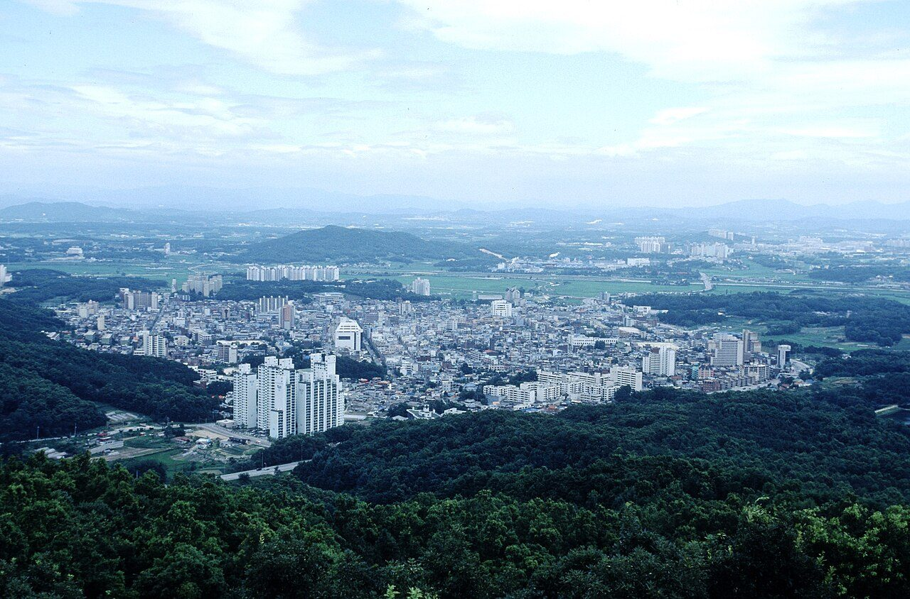
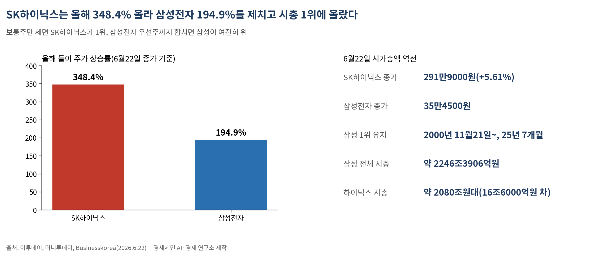
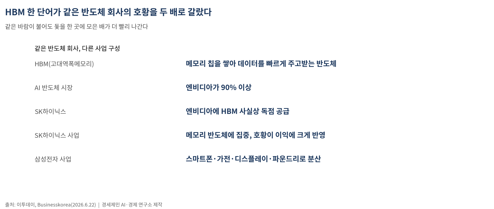
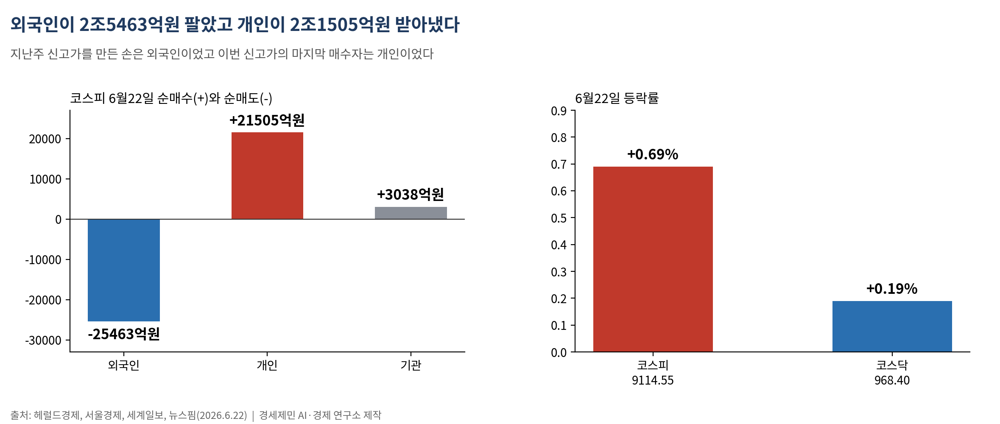
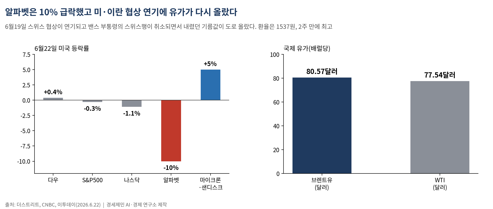
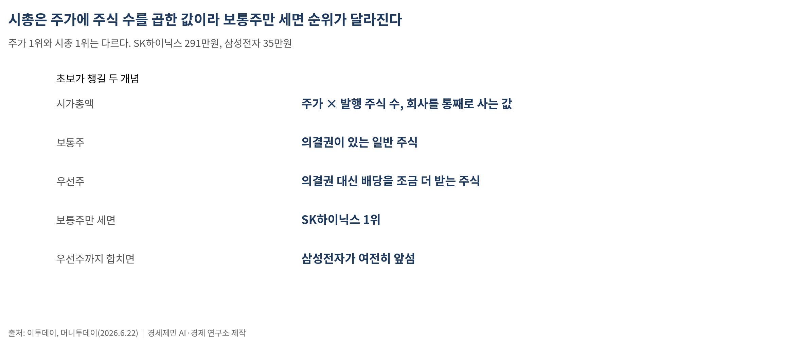
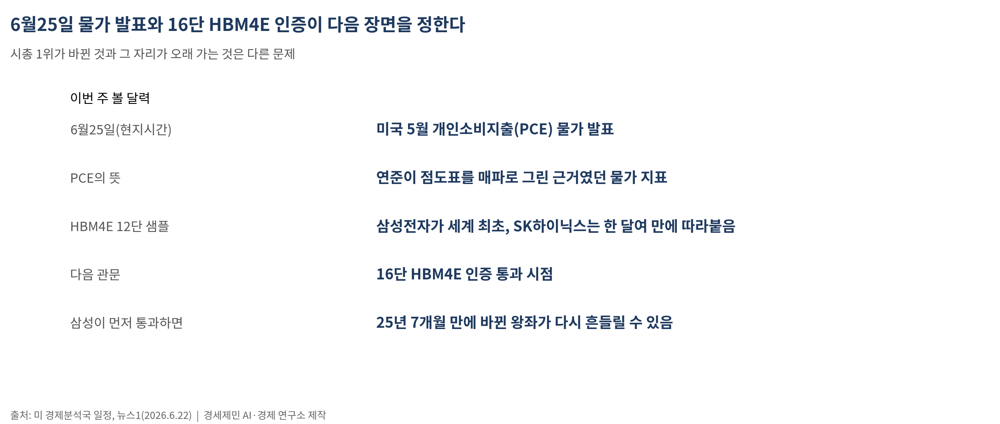

[주식공부] 25년 7개월 지킨 왕좌, 하루 만에 주인이 바뀌었다 — 하이닉스가 삼성을 제친 날
AI경제저널=김갑봉 기자 | 291만닉스가 35만전자를 제치고 코스피 시총 1위… 그런데 우선주까지 합치면 삼성이 여전히 위다. '대장주가 바뀌었다'는 말과 '회사가 더 커졌다'는 말은 다른 문제다

(데이터 기준시점: 2026년 6월22일 종가)
6월22일 SK하이닉스가 삼성전자를 제치고 코스피 시가총액 1위에 올랐다. 삼성전자가 2000년 11월21일 이후 25년 7개월 동안 한 번도 내준 적 없던 자리다(머니투데이·Businesskorea).
이날 SK하이닉스는 전 거래일보다 15만5000원(5.61%) 오른 291만9000원에 마감했다. 같은 시각 삼성전자는 35만4500원에 그쳤다. 한 종목의 시가총액이 다른 한 종목을 넘어선 것이 25년 7개월 만이라는 사실은, 이번 강세장이 무엇을 주인공으로 삼았는지를 한 줄로 보여준다.
그런데 한 가지가 더 있다. 보통주만 세면 SK하이닉스가 1위지만, 삼성전자 우선주까지 합치면 삼성의 전체 시총은 약 2246조3906억원으로, SK하이닉스 한 종목(약 2080조원대)보다 16조6000억원가량 많다(이투데이). 바뀐 것은 '단일 종목 1위'이지, '더 큰 회사'가 아니다. 둘은 다른 말이다.
숫자로 본 역전 — 올해 348% 대 195%

역전의 직접 원인은 한 해 주가 상승률의 격차다. SK하이닉스 주가는 올해 들어 348.4% 올랐고, 삼성전자는 같은 기간 194.9% 오르는 데 그쳤다(이투데이). 두 회사 모두 크게 올랐지만, 오른 폭이 거의 두 배 차이가 났고 그 격차가 왕좌를 갈랐다.
코스피 지수 자체도 이날 사상 최고가를 새로 썼다. 코스피는 전 거래일보다 62.13포인트(0.69%) 오른 9114.55에 마감해 종가 기준 최고치를 경신했다(서울경제·세계일보). 반면 코스닥은 1.81포인트(0.19%) 오른 968.40에 그쳤다(뉴스핌). 지난주(6월18일) 코스닥이 1000선에서 3% 넘게 무너진 뒤, 이번 주에도 코스피와 코스닥의 거리는 좁혀지지 않았다.
왜 하이닉스인가 — HBM이라는 한 단어

답은 HBM 한 단어로 모인다. HBM(High Bandwidth Memory·고대역폭메모리)은 여러 개의 메모리 칩을 수직으로 쌓아 데이터를 한꺼번에 빠르게 주고받게 만든 반도체다. 인공지능(AI) 연산을 처리하는 그래픽처리장치(GPU) 옆에 붙어 데이터를 실어 나르는 핵심 부품이다. AI 반도체 시장의 90% 이상을 쥔 엔비디아에, SK하이닉스는 이 HBM을 사실상 독점 공급해 왔다(Businesskorea).
같은 반도체 회사라도 사업 구성이 다르면 호황을 받는 정도가 다르다. SK하이닉스는 메모리 반도체에 사업이 집중돼 있어, AI 호황으로 메모리 값이 오르면 이익이 한꺼번에 불어나는 지렛대(레버리지) 효과를 크게 누린다. 반면 삼성전자는 스마트폰·가전·디스플레이·파운드리(반도체 위탁생산)까지 사업이 넓게 퍼져 있어, 반도체 호황의 수혜가 여러 사업으로 분산된다(이투데이). 같은 바람이 불어도 돛을 한 곳에 모은 배가 더 빨리 나가는 셈이다.
'대장주 교체'에 붙은 경고

축포만 터진 것은 아니다. 시총 역전을 강세장의 과열 신호로 읽는 목소리가 같은 날 나왔다. 이재만 하나증권 연구원은 "밸류에이션상 SK하이닉스가 삼성전자보다 비싼 상황"이라며 "강세장에서 나타날 수 있는 단기 과열 시그널 중 하나로 판단한다"고 했다(머니투데이).
핵심은 이익과 시총의 어긋남이다. 증권가가 추정하는 순이익 규모는 여전히 삼성전자가 SK하이닉스보다 크다. 더 많이 버는 회사보다 덜 버는 회사의 시총이 앞섰다는 것은, 시장이 SK하이닉스의 '미래'에 그만큼 높은 값을 미리 매겼다는 뜻이다. 기대가 클수록 그 기대가 빗나갈 때의 낙폭도 크다. 더 버는 것과 더 비싸게 매겨지는 것은 다른 문제다.
수급도 같은 결을 그렸다. 이날 외국인은 코스피에서 2조5463억원을 순매도했고, 그 물량을 개인이 2조1505억원, 기관이 3038억원어치 받아냈다(헤럴드경제). 지난주 신고가를 만든 손이 외국인이었다면, 이번 신고가의 마지막 매수자는 개인이었다. 신고가 헤드라인 뒤에서 누가 사고 누가 파는지는, 같은 날의 다른 숫자다.
같은 주 바깥 풍경 — 알파벳 10% 급락과 미·이란 협상 연기

한국 밖 풍경은 사뭇 달랐다. 6월22일 미국에서 다우지수는 0.4% 올랐지만 S&P500은 0.3%, 나스닥은 1.1% 내렸다(더스트리트). 알파벳(구글 모회사)이 하루 10% 급락한 것이 컸다. AI 투자비(capex·설비투자)가 너무 빠르게 불어난다는 우려가 빅테크 전반을 눌렀다. 반면 메모리 반도체인 마이크론과 샌디스크는 5% 올라, AI 반도체 안에서도 종목별 표정이 갈렸다.
유가는 다시 들썩였다. 지난주 칼럼이 짚은 미국과 이란의 종전 합의는 매끄럽게 서명되지 않았다. 6월19일 스위스에서 열릴 예정이던 양국 협상이 돌연 연기되고 밴스 미 부통령의 스위스행도 취소되면서, 내렸던 기름값이 도로 올랐다(CNBC). 같은 날 브렌트유는 배럴당 80.57달러(약 12만원), 서부텍사스원유(WTI)는 77.54달러에 거래됐다(CNBC). '합의 통로가 열린 것'과 '합의가 끝난 것'은 다른 말이다.
여기에 매파 연방공개시장위원회(FOMC)의 잔상이 더해졌다. 원·달러 환율은 전일 주간 종가보다 10원 오른 1537원으로, 2주 만에 가장 높았다(이투데이). 환율이 오른다는 것은 원화 값이 내린다는 뜻이고, 보통은 외국인 자금에 부담을 준다. 이날 외국인이 2조원 넘게 판 배경 가운데 하나다.
초보가 챙길 개념 — 시가총액, 그리고 보통주와 우선주

이번 주에 외울 개념 둘.
하나는 시가총액(market cap·시총)이다. 시총은 '주가 × 발행 주식 수'로, 그 회사를 통째로 사려면 얼마가 드는지를 나타낸 값이다. 주가가 비싸도 주식 수가 적으면 시총은 작을 수 있고, 주가가 싸도 주식 수가 많으면 시총은 클 수 있다. 그래서 '주가 1위'와 '시총 1위'는 다르다. SK하이닉스 주가는 291만원, 삼성전자는 35만원이지만, 두 회사의 시총이 엎치락뒤치락한 이유가 여기 있다. 시총은 단순한 순위표가 아니라, 시장이 그 회사 전체에 매긴 가격표다.
다른 하나는 보통주와 우선주의 차이다. 보통주는 주주총회에서 의결권(회사 일에 투표할 권리)을 가진 일반 주식이고, 우선주는 의결권 대신 배당을 조금 더 받는 주식이다. 삼성전자처럼 우선주가 따로 상장된 회사는, 보통주만 세느냐 우선주까지 합치느냐에 따라 시총 순위가 달라진다. 6월22일 '삼성전자가 1위를 내줬다'는 보통주 기준 이야기이고, 우선주까지 더하면 삼성이 여전히 앞선다는 말이 함께 나온 까닭이다.
숫자 하나를 곁들여 둔다. 코스피가 9000을 넘고 시총 1위가 바뀐 지금도, 코스피의 선행 주가수익비율(forward PER·앞으로 1년 예상 이익 대비 주가가 몇 배인지 보는 잣대)은 미국 20배 안팎, 일본 16배, 대만·독일 10배 중반에 견줘 여전히 낮은 편이다(삼성증권, 직전 기준). 낮을수록 이익에 견줘 주가가 싸다는 뜻이다. 다만 시장 전체가 싸다는 사실과, 시총 1위에 오른 한 종목이 싸다는 사실은 같지 않다.
다가오는 주 — 물가 지표 하나와 인증 한 장

이번 주 시장이 볼 달력은 둘이다. 먼저 6월25일(현지시간) 발표될 미국 5월 개인소비지출(PCE) 물가다(미 경제분석국 일정). 연준이 점도표를 매파로 그린 근거가 물가였던 만큼, 이 지표가 매파 전망을 뒷받침할지 반박할지가 환율과 외국인 수급의 다음 방향을 가른다.
다음은 반도체 안방 싸움이다. 삼성전자는 차세대 HBM4E의 12단 샘플을 세계 최초로 내놨지만, SK하이닉스도 한 달여 만에 같은 12단 샘플을 출하하며 따라붙었다. 증권가는 다음 관문으로 16단 HBM4E의 인증 통과 시점을 본다(뉴스1). 삼성이 이 인증을 먼저 통과하면, 25년 7개월 만에 바뀐 왕좌가 다시 흔들릴 수 있다.
시총 1위가 바뀐 것과 그 자리가 오래 가는 것은 다른 문제다. 외국인이 매도를 멈추는지, 개인이 받아낸 물량이 다음 주에도 버텨주는지, 그리고 16단 인증이라는 한 장의 종이가 누구 손에 먼저 쥐어지는지가 다음 장면을 정한다. 신고가 헤드라인을 읽는 일과, 그날 시총 순위가 무엇으로 뒤집혔는지 그 안을 들여다보는 일은 다른 자리에서 시작한다.
─────────────────────
활용 AI: Claude Opus 4.8 (Anthropic)
참고문헌
서울경제, "[코스피] 62.13포인트(0.69%) 오른 9114.55 마감", 2026.6.22, https://www.sedaily.com/article/20058638
세계일보, "코스피, 이란협상 주시속 또 사상 최고치…9114.55 마감", 2026.6.22, https://segye.com/newsView/20260622512381
뉴스핌, "[마감시황] 코스피, 최고가 또 썼다…9114 마감", 2026.6.22, https://www.newspim.com/news/view/20260622000949
Businesskorea, "[Market Special] 25년 7개월 만의 '대지각변동'…SK하이닉스, 삼성전자 제치고 코스피 시총 1위 등극", 2026.6.22, https://www.businesskorea.co.kr/news/articleView.html?idxno=271751
이투데이, "삼성전자, 우선주 합산시 여전한 시총 1위…단일 종목은 SK하이닉스가 역전[종합]", 2026.6.22, https://www.etoday.co.kr/news/view/2596078
머니투데이, "SK하이닉스, 삼전 제치고 시총 1위...'코스피 고점 신호' 경고 나왔다", 2026.6.22, https://www.mt.co.kr/stock/2026/06/22/2026062215234578773
헤럴드경제, "시총 1위 바뀐날, 코스피 종가 최고치 또 갈아치웠다 [투자360]", 2026.6.22, https://biz.heraldcorp.com/article/10784249
뉴스1, "'HBM 시대' 개척한 SK하닉 '시총 1위'…삼성전자 재역전 조건은", 2026.6.22, https://www.news1.kr/finance/general-stock/6204905
이투데이, "[환율마감] 원·달러 1540원 육박 2주일만 최고..엔화 약세+외인 코스피 매도", 2026.6.22, https://www.etoday.co.kr/news/view/2596006
TheStreet, "Stock Market Today (June 22, 2026): Nasdaq-100, S&P 500 fall after welcoming new members in quarterly shakeup", 2026.6.22, https://www.thestreet.com/stock-market-today/stock-market-today-dow-jones-sp-500-nasdaq-updates-june-22-2026
CNBC, "Oil prices rise after U.S.-Iran peace talks in Geneva are abruptly postponed", 2026.6.19, https://www.cnbc.com/2026/06/19/oil-prices-wti-brent-crude-us-iran-deal-strait-hormuz-shipping-recovery.html
주식공부 #SK하이닉스 #삼성전자 #시가총액 #시총1위 #HBM #코스피9114 #보통주우선주 #알파벳급락 #PCE물가
사진 출처
· [대표사진] Academy of Korean Studies, "Panoramic view of Icheon City.jpg", 위키미디어 공용, 공공누리 제1유형, https://commons.wikimedia.org/wiki/File:Panoramic_view_of_Icheon_City.jpg
※ 이 기사는 인공지능을 활용해 작성했습니다.
관련기사
- [주식공부] 코스피 9000 첫 돌파한 날, 코스닥은 3% 무너졌다
- 코스피, 사상 최고가 주에 서킷브레이커 급락…다음 주 삼성 실적이 분기점
- [주식공부] 이틀 만에 천국과 지옥…마이크론에 5.42% 오른 코스피, 애플에 5.81% 빠졌다
- [주식공부] 코스피 8000 되찾은 힘, 이번에도 한국 밖에서 왔다
저작권자 © AI경제저널 무단전재 및 재배포, AI학습 및 활용 금지